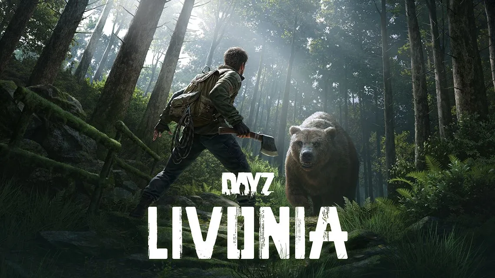
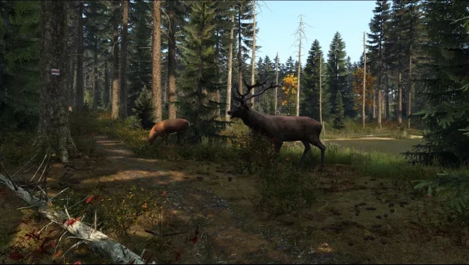
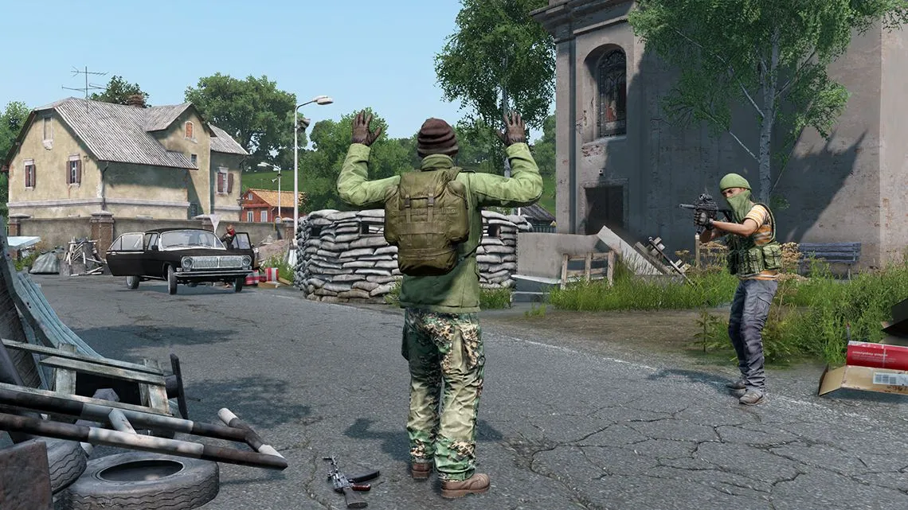
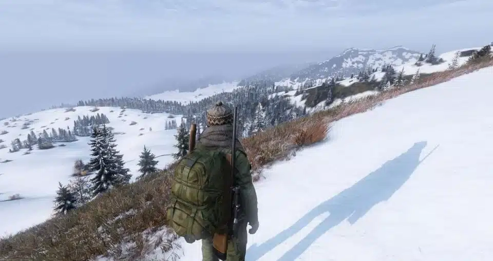
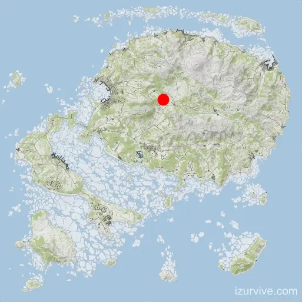
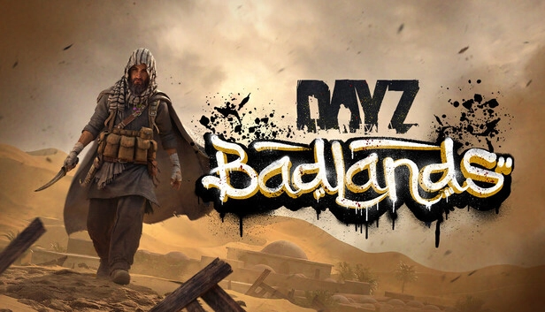
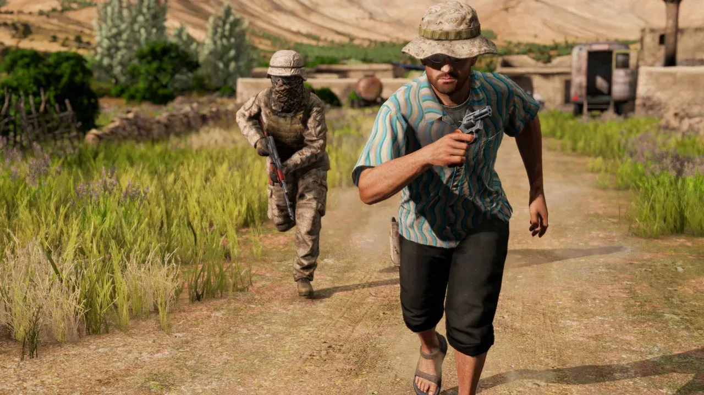
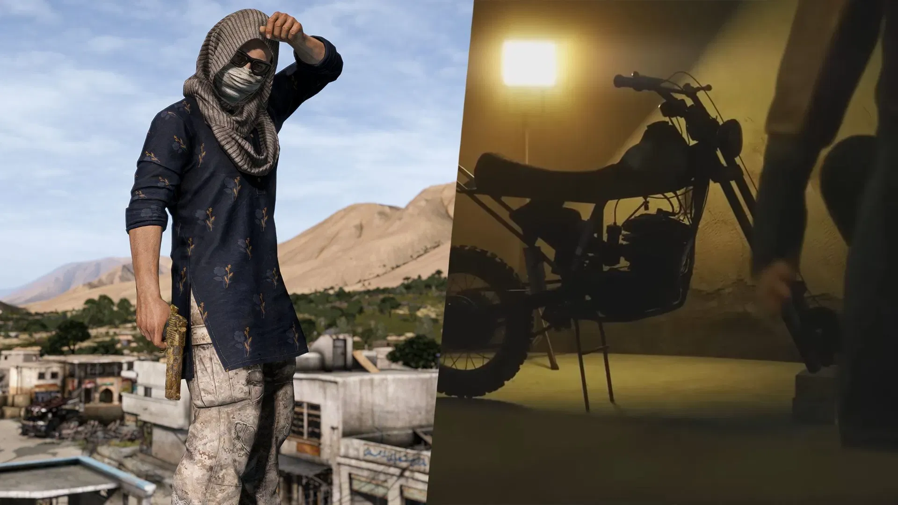

The first map to ever come out as a mod was the famous Chernarus map. It was one-of-a-kind for its time,
having a massive reach and size of 225 square kilometers. This makes sprinting from one side of the map to
the other take about 60 to 90 minutes. That is, if you ran it straight without food or water stops. With
10km of forests, 50km of towns and villages, and a whopping 350km of roads, it is no wonder why people are
sometimes so hard to find. It features an expansive amount of towns and, most importantly, more than three
military hot zones. This map makes anyone disappear.
Dayz Livonia Map



Release of livonia was on on December 3, 2019, offering a completely different map size compared to what players were
used to. The developers wanted to make running into players more common and did that by making the new map 163
square kilometers (63.3square miles). Not only did they make the map smaller, but they also designed it as a
dense wilderness experience with minimal towns. It was the first official DayZ map to host an underground bunker
that required a keycard to enter. With vast, dense forests and less ocean, this gave the community a big
surprise, as you will almost always run into someone on a full server—something the DayZ community
was not used to.
Sakhal Map


Sakhal was the latest map released, and it is even smaller than Livonia. The map is dedicated to extreme
survival players, offering a full-blown sub-arctic survival and PvP experience. The Frostline expansion was
released on October 15, 2024, for all console and PC players. It features a massive 83x83 sqkm sub-arctic
archipelago that brings harsh snowstorms, new wildlife, and different environmental hazards to the game
When does DayZ Badlands come out?



1.29 dayz update roadmap can be found on almost all of the wobo sites.
From how to make a fire in the dayz badlands map to any other map that you may want
to learn about wobo is the guy you want to look up.This standalone Map can make or
have deadly tempratures. The DayZ Badlands map is releasing this year!
To prepare for that map, we have made the summer on this map mimick
the Miami,FL area. If you get too hot, change clothes. You can also go
into the water for a quick cooldown.